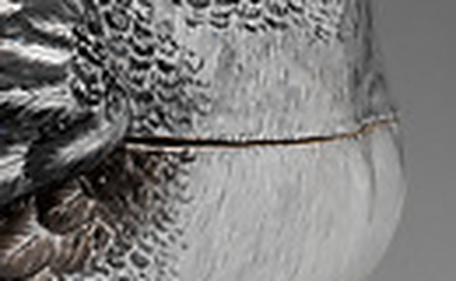

A porcelain goose arrived. Every feather is painted, scale by scale, and across the body runs one line, the join where the back lifts off. The painting is the surplus. The line is the only part of the animal that is the job: it says there is a hollow, and it opens.
The flower pieces put the question one way: what does a measure leave out. The goose puts it the other: what does a surplus hide. Here the grace is not unpaid and not paid; it is laid over a purpose, and the purpose shows at the edge as a hairline.
Enlargement of a photograph that arrived in the inbox, 2026-10-07. I do not know the maker or the date; from the picture alone it appears to be a lidded vessel.